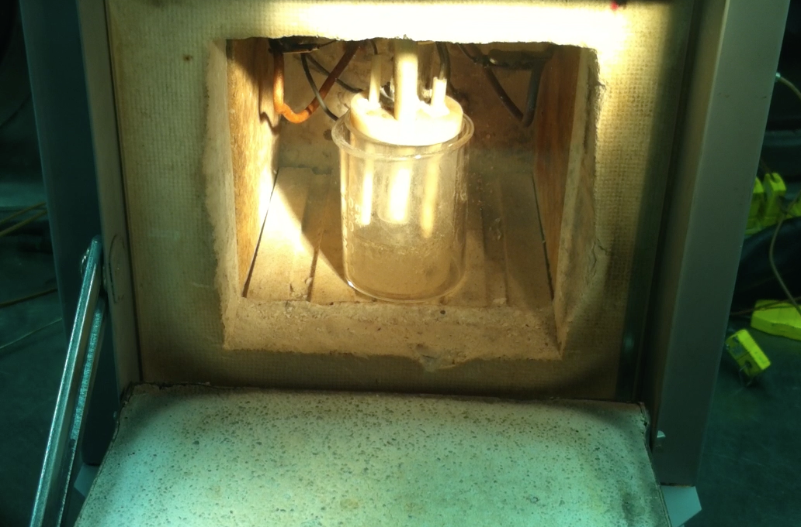

I design and build technical solutions for problems in sustainable energy, manufacturing, and engineering. I leverage decades of experience across academia, industry and government to solve complex problems, including:

High-Temperature Materials Testing Research reactor and electrochemical sensor development for high-temperature electrochemical materials testing and characterization.
Exploring capacitive sensors to create a compliant robot gripper, so it could, for example, hold a plastic cup without crushing it. The hard part was doing this using a $5 Arduino nano for all of the processing.
I also built this website, and have built dozens of others. AI agents like Anthropic's Claude have lowered the barrier for programming. I recently "vibe-coded" iOS and macOS apps with Swift UI with the help of Claude. It's not perfect, but it's a powerful tool that can help accelerate development.
Academics
I have been a lecturer and academic advisor and curriculum author at several universities, with experience in designing and delivering engineering education programs, in-person and online. I'm honored to hear from former students, who reach out for career advice and just to stay in touch.
In Short
A life-long learner with a passion for ocean exploration committed to building a sustainable future through education, research and innovation in engineering, science, manufacturing and product development.